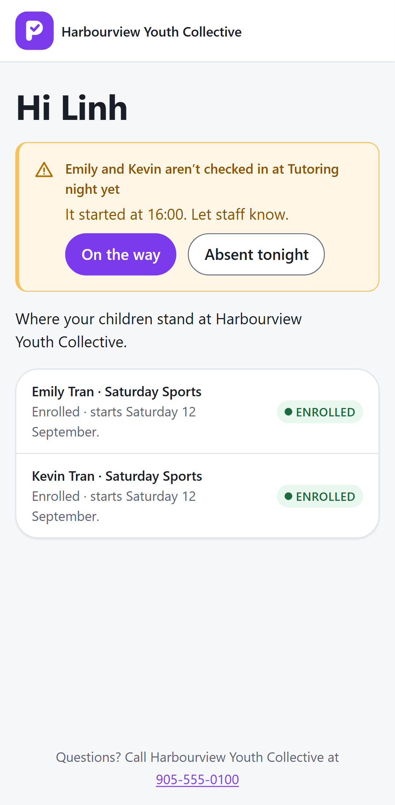
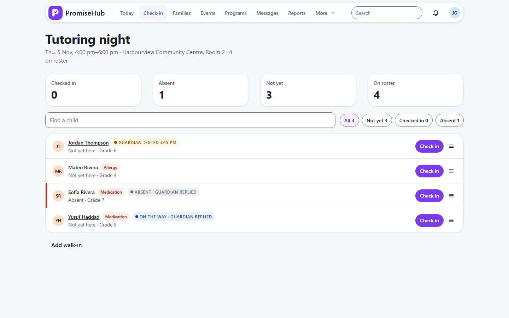

PromiseHub · Video 23
Respond to an absence alert
One number, or one tap
One number, or one tap
Emily and Kevin, in one tap.


| Case | Answer |
|---|---|
| New phone answers | 401 until the code |
| Answer absent | 204, child absent |
| After answering | No open alert |
Next: ending the session